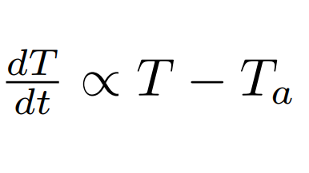
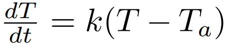
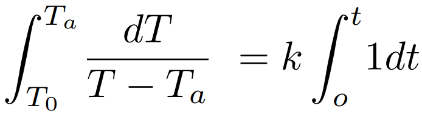
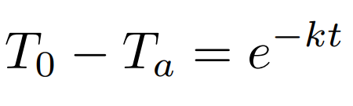

Antecedentes de esta ley
Newton realizó una observación respecto al enfriamiento de los cuerpos y llegó a la conclusión de que la velocidad en la que se enfría un cuerpo es proporciona a la diferencia entre temperatura al instante del cuerpo y la del ambiente(siendo esta menor que la del cuerpo ya que es un enfriamiento) y con respecto a ese análisis postulo su ley de enfriamiento newtoniano con la siguiente relación:
Con dicho postulado saco una ecuación. Siendo k un coeficiente de variación.

Se separan variables.
Integramos en la parte izquierda de To hasta Ta y en la parte derecha desde 0 hasta t.
Despejamos y tendriamos la ecuación general de la ley de enfriamiento
